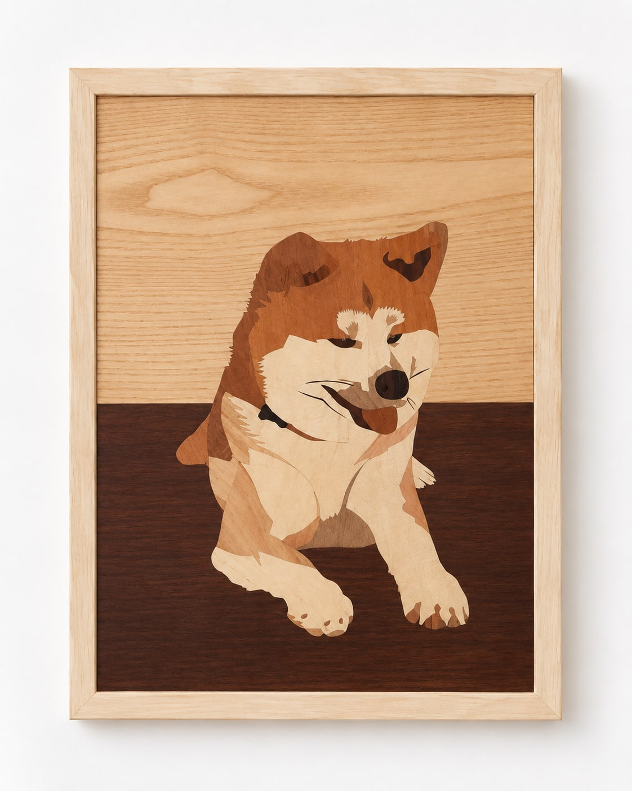
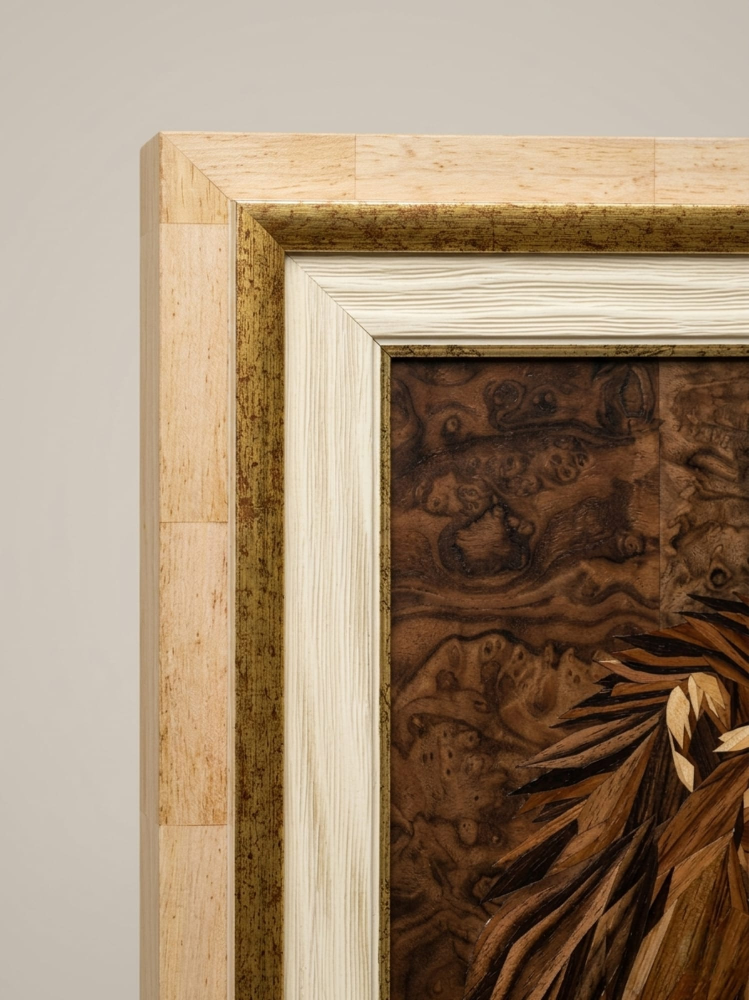

Originale Werke,
jetzt verfügbar
Jedes der folgenden Werke ist ein Original, von Hand aus natürlichem Holzfurnier geschnitten. Mit „Nicht verkäuflich“ gekennzeichnete Werke werden zur Ansicht gezeigt; alle anderen können Sie noch heute erwerben.

Black Woman
Eine Studie über Leuchtkraft und Würde. Helle Esche geht in Nussbaumschatten über — eine Wärme, die keine Farbe nachahmen kann.
King of Ararat
Verwurzelt in armenischer Erinnerung und dem heiligen Berg. Tiefes Wenge und Amboina — Identität ohne Nostalgie.
Strength in Harmony
Zwei Präsenzen. Zwei Maserungsrichtungen. Ein Doppelporträt, das auf der Verbindung besteht, die es zeigt.
The Lion Within
850 Teile. Gebändigte Stärke — nicht der Löwe, der brüllt, sondern der, der in völliger Wachheit ruht.
Geometric German Shepherd
125 präzise geschnittene Holzfragmente. Zerlegung und Wiederaufbau der Form — Identität und Stärke in natürlichem Holz.
Eagle
Ein Adler im Flug, von Hand aus natürlichem Holzfurnier geschnitten — geschichtete Federn vor einem Berggrund.
Tiger
Ein Tiger tritt aus einem dunklen, lebhaft gemaserten Holzgrund hervor; sein gestreiftes Fell ist von Hand in natürlichem Holzfurnier geschnitten.
Ren
Ein Hundeporträt in warmen und hellen Holzfurnieren auf zweifarbigem Grund.
Rose
Eine einzelne Rose in hellen Holzfurnieren auf dunklem, schlicht gemasertem Grund, in einem verzierten weißen Rahmen.
The Lion Within — Intarsie aus Holzfurnier, in situ gezeigt
Jedes Teil von Hand
Jedes Furnier wird einzeln ausgewählt, von Hand geschnitten und gesetzt. Maserungsrichtung, Ton und Textur jedes Teils tragen zum fertigen Porträt bei.


Manche Werke sind nicht verkäuflich
Bestimmte Werke verbleiben dauerhaft in der Privatsammlung des Künstlers — Meilensteine in der Entwicklung von VaCa Marquetry. Sie werden in Ausstellungen gezeigt, sind aber nicht erwerbbar.
Zur Privatsammlung →Ein Porträt eines Menschen,
den Sie lieben
Von Hand aus Holz geschnitten, ganz für Sie gefertigt — beginnend mit einer kostenlosen privaten Vorschau, vorbereitet innerhalb von 24 Stunden.
Ein Porträt in Auftrag geben